- 00 开篇词 如何高效入门PyTorch？.md.html
- 01 PyTorch：网红中的顶流明星.md.html
- 02 NumPy（上）：核心数据结构详解.md.html
- 03 NumPy（下）：深度学习中的常用操作.md.html
- 04 Tensor：PyTorch中最基础的计算单元.md.html
- 05 Tensor变形记：快速掌握Tensor切分、变形等方法.md.html
- 06 Torchvision（上）：数据读取，训练开始的第一步.md.html
- 07 Torchvision（中）：数据增强，让数据更加多样性.md.html
- 08 Torchvision（下）：其他有趣的功能.md.html
- 09 卷积（上）：如何用卷积为计算机“开天眼”？.md.html
- 10 卷积（下）：如何用卷积为计算机“开天眼”？.md.html
- 11 损失函数：如何帮助模型学会“自省”？.md.html
- 12 计算梯度：网络的前向与反向传播.md.html
- 13 优化方法：更新模型参数的方法.md.html
- 14 构建网络：一站式实现模型搭建与训练.md.html
- 15 可视化工具：如何实现训练的可视化监控？.md.html
- 16 分布式训练：如何加速你的模型训练？.md.html
- 17 图像分类（上）：图像分类原理与图像分类模型.md.html
- 18 图像分类（下）：如何构建一个图像分类模型_.md.html
- 19 图像分割（上）：详解图像分割原理与图像分割模型.md.html
- 20 图像分割（下）：如何构建一个图像分割模型？.md.html
- 21 NLP基础（上）：详解自然语言处理原理与常用算法.md.html
- 22 NLP基础（下）：详解语言模型与注意力机制.md.html
- 23 情感分析：如何使用LSTM进行情感分析？.md.html
- 24 文本分类：如何使用BERT构建文本分类模型？.md.html
- 25 摘要：如何快速实现自动文摘生成？.md.html
- 加餐 机器学习其实就那么几件事.md.html
- 用户故事 Tango：师傅领进门，修行在个人.md.html
- 答疑篇 思考题答案集锦.md.html
- 结束语 人生充满选择，选择与努力同样重要.md.html
- 捐赠
17 图像分类（上）：图像分类原理与图像分类模型
你好，我是方远，欢迎来到图像分类的学习。
通过前面的学习，我们已经掌握了PyTorch有关深度学习的不少知识。为了避免纸上谈兵，我们正式进入实战环节，分别从计算机视觉与自然语言处理这两个落地项目最多的深度学习应用展开，看看业界那些常见深度学习应用都是如何实现的。
完成这个模块的学习以后，我想你不仅仅会巩固之前学习的内容，还会进一步地落实到细分的领域去看待问题、解决问题。
说到计算机视觉，很常见的一种应用方向就是图像分类。关于图像分类，其实离我们并不遥远。你有没有发现，现在很多智能手机，照相的时候都会自动给照片内容打上标签。
举个例子，你看后面的截图，就是我用手机拍照的时候，手机自动对摄像头的内容进行了识别，打上了“多云”这个标签。
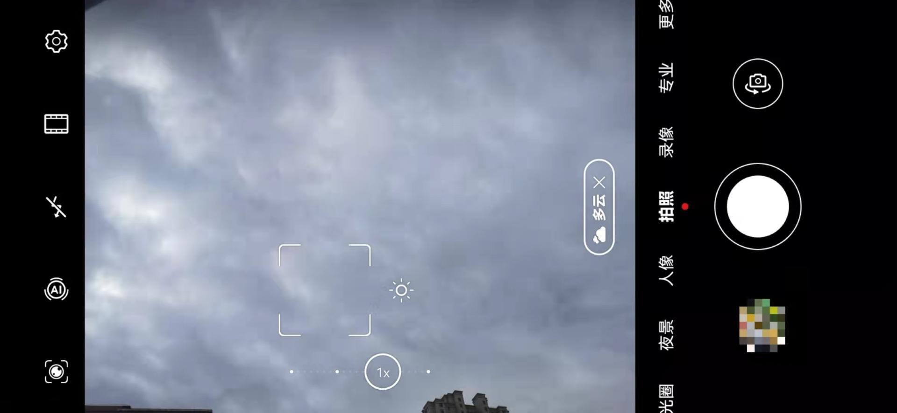
然后你会发现，手机还能根据识别到的内容，为你推荐一些美化的方案。那这是怎么做到的呢？其实这就是卷积神经网络最常用、最广泛且最基本的一个应用：图像分类。
今天咱们就来一探究竟，看看图像分类到底是怎么一回事。我会用两节课的篇幅，带你学习图像分类。这节课我们先学习理论知识，掌握图像分类原理和常见的卷积神经网络。下节课，我们再基于今天学到的原理，一块完成一个完整的图像分类项目实践。
图像分类原理
我们还是“书接上文”，沿用第3节课NumPy的那个例子。现在线上每天都有大量的图片被上传，老板交代你设计一个模型，把有关极客时间Logo的图片自动找出来。
把这个需求翻译一下就是：建立一个图像分类模型，提供自动识别有极客时间Logo图片的功能。
我们来梳理一下这个模型的功能，我们这个模型会接收一张图片，然后会输出一组概率，分别是该图片为Logo的概率与该图片为其他图片的概率，从而通过概率来判断这张图片是Logo类还是Other类，如下图所示：
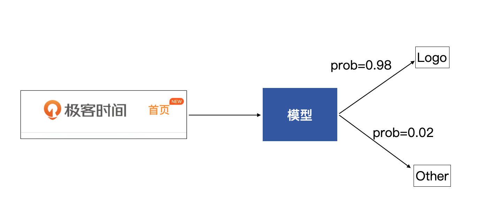
感知机
我们将上面的模型进一步拆分，看看如何才能获得这样的一组输出。
其中输入的图片，就是输入X，将其展开后，可以获得输入X为\(X={x\_1, x\_2, … , x\_n}\)，而模型可以看做有两个节点，每个节点都会有一个输出，分别代表着对输入为Logo和Other的判断，但这里的输出暂时还不是概率，只是模型输出的一组数值。这一部分内容如下图所示：
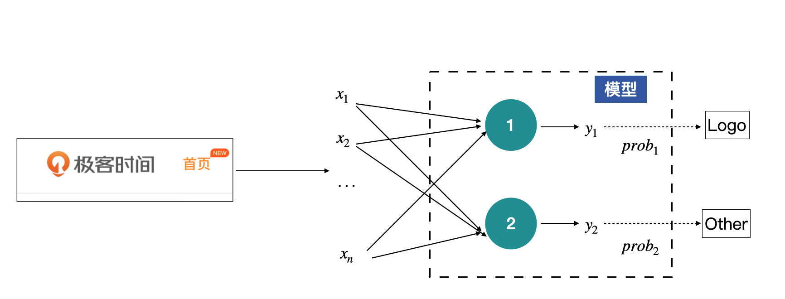
上图这个结构其实就是感知机了，中间绿色的节点叫做神经元，是感知机的最基本组成单元。上图中的感知机只有中间一层（绿色的神经元），如果有多层神经元的话，我们就称之为多层感知机。
那什么是神经元呢？神经元是关于输入的一个线性变换，每一个输入x都会有一个对应的权值，上图中的y的计算方式为：
\[y\_i=\\delta(w\_{i1}x\_{1} + w\_{i2}x\_{2} + … + w\_{i\_n}x\_{n} + b\_i), \\space \\space \\space i=1,2\]
其中，\(w\_{i1}, w\_{i2}, …, w\_{in}\)是神经元的权重，\(b\_i\)为神经元的偏移项。权重与偏移项都是通过模型学习到的参数。\(\\delta\)为激活函数，激活函数是一个可选参数。
那如何将一组数值，也就是\(y\_{1}\)与\(y\_{2}\)转换为一组对应的概率呢？这个时候Softmax函数就要登场了。它的作用就是将一组数值转换为对应的概率，概率和为1。
Softmax的计算公式如下：
\[\\delta(x\_j) = \\frac{e^{x\_j}}{\\sum\_{j=1}^{m}e^{x\_j}}\]
请看下面的代码，我们用Softmax函数对原始的输入y做个转化，将y中的数值转化为一组对应的概率：
import torch
import torch.nn as nn
# 2个神经元的输出y的数值为
y = torch.randn(2)
print(y)
输出：tensor([0.2370, 1.7276])
m = nn.Softmax(dim=0)
out = m(y)
print(out)
输出：tensor([0.1838, 0.8162])
你看，经过Softmax之后，原始的输出y是不是转换成一组概率，并且概率的和为1呢。原始y中最大的y具有最大的概率。
当然，Softmax也不是每一个问题都会使用。我们根据问题的不同可以采用不同的函数，例如，有的时候也会使用sigmoid激活函数，sigmoid激活函数是将1个数值转换为0到1之间的概率。
现在，我们将上述的过程补充到前面的模型里，如下图所示。
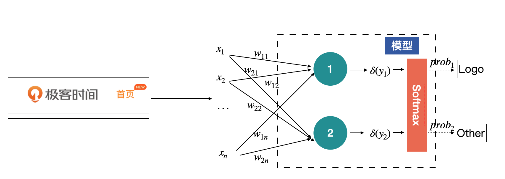
全连接层
其实，上面那张示意图，就是图像的分类原理了。其中绿色那一层。在卷积神经网络中称为全连接层，Full Connection Layer，简称fc层。一般都是放在网络的最后端，用来获得最终的输出，也就是各个类别的概率。
因为全连接层中的神经元的个数是固定的，所以说在有全连接层的网络中，输入图片是必须固定尺寸的。而现实里我们线上收集到的图片会有不同的尺寸，所以需要先把图片尺寸统一起来，PyTorch才能进一步处理。
我们假设将前面的输入图片resize到128x128，然后看看全连接层推断的过程在PyTorch中是如何实现的。
x = torch.randint(0, 255, (1, 128*128), dtype=torch.float32)
fc = nn.Linear(128*128, 2)
y = fc(x)
print(y)
输出：tensor([[ 72.1361, -120.3565]], grad_fn=<AddmmBackward>)
# 注意y的shape是(1, 2)
output = nn.Softmax(dim=1)(y)
print(output)
输出：tensor([[1., 0.]], grad_fn=<SoftmaxBackward>)
结合代码不难看出，PyTorch中全连接层用nn.Linear来实现。我们分别看看里面的重要参数有哪些：
- in_features：输入特征的个数，在本例中为128x128；
- out_features：输出的特征数，在本例中为2；
- bias：是否需要偏移项，默认为True。
全连接层的输入，也不是原始图片数据，而是经过多层卷积提取的特征。
前面我们曾说过，有的网络是可以接收任意尺度的输入的。在上文中的设计中，全连接层的输入x1到xn是固定的，数目等于最后一层特征图所有元素的数目。如下图所示：
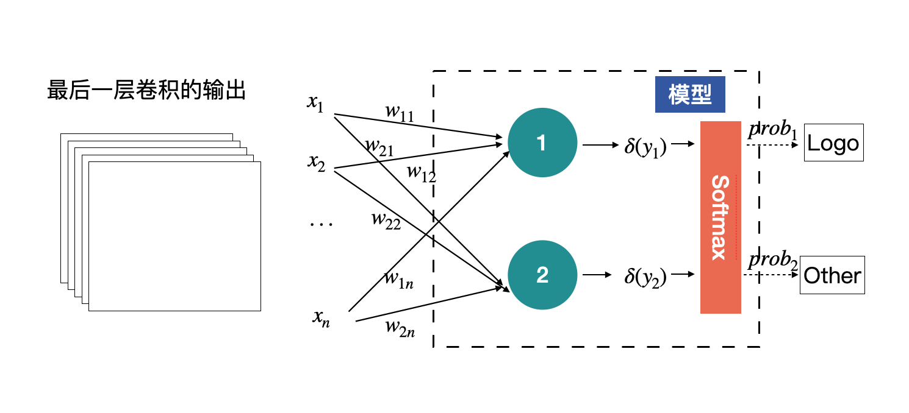
我们将上述结构稍作调整，就可以接收任意尺度的输入了。只需要在最后的特征图后面加一个全局平均即可，也就是将每个特征图进行求平均，用平均值代替特征图，这样无论输入的尺度是多少，进入全连接层的数据量都是固定的。
如下图所示，黄色的圈就是全局平均的结果。
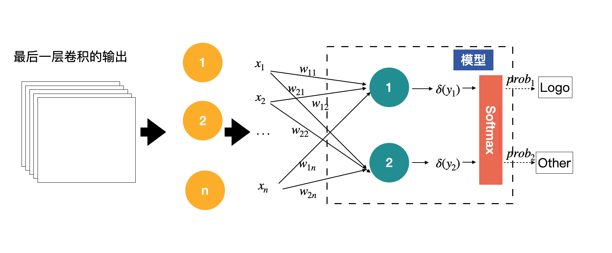
我们下一节课介绍的EfficientNet就是采用这种方式，使得网络可以使用任意尺度的图片进行训练。
卷积神经网络
其实刚才说的多层感知机就是卷积神经网络的前身，由于自身的缺陷（参数量大、难以训练），使其在历史上有段时间一直是停滞不前，直到卷积神经网络的出现，打破了僵局。
卷积神经网络的最大作用就是提取出输入图片的丰富信息，然后再对接上层的一些应用，比如前面提到的图片分类。把卷积神经网络应用到图像分类原理中，得到的模型如下图所示：
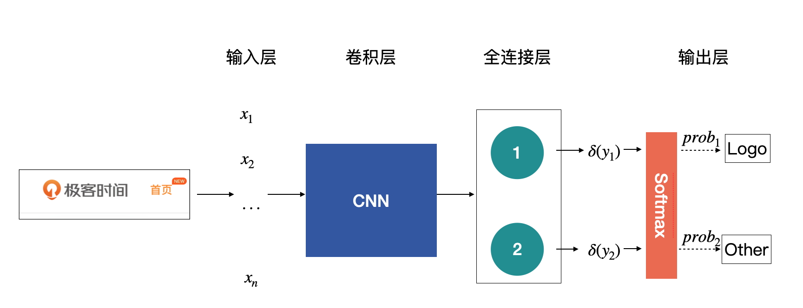
你需要注意的是示意图中各个层的定义，不同层有不同的名称。
在上图中，整个模型或者网络的重点全都在卷积神经网络那块，所以这也是我们的工作重点。
那如何找到一个合适的卷积神经网络呢？在实际工作中，我们几乎不会自己去设计一个神经网络网的（因为不可控的变量太多），而是直接选择一些大神设计好的网络直接使用。那网络模型那么多，我们如何验证大神们提出的网络确实是可靠、可用的呢？
ImageNet
在业界中有个标杆——ImageNet，大家都用它来评价提出模型的好与坏。
ImageNet本身包含了一个非常大的数据集，并且从2010年开始，每年都会举办一次著名的ImageNet 大规模视觉识别挑战赛（The ImageNet Large Scale Visual Recognition Challenge ，ILSVRC），比赛包含了图像分类、目标检测与图像分割等任务。
其中，图像分类比赛使用的数据集是一份有1000个类别的庞大数据集，只要能在这个比赛中脱颖而出的模型，都是我们所说的经典网络结构，这些网络在实际项目中基本都是我们的首选。
从2012年开始，伴随着深度学习的发展，几乎每一年都有非常经典的网络结构诞生，下表为历年来ImageNet上Top-5的错误率。
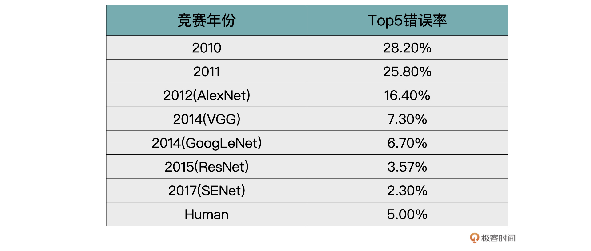
你可能会有疑问，了解这么多网络模型真的有必要么？
我想说的是，磨刀不误砍柴工，机器学习这个领域始终是依靠研究驱动的。工作当中，我们很少从0到1自创一个网络模型，常常是在经典设计基础上做一些自定义配置，所以你最好对这些经典网络都有所了解。
接下来，我们就挑选几个经典的神经网络来看看。
VGG
VGG取得了ILSVRC 2014比赛分类项目的第2名和定位项目的第1名的优异成绩。
当年的VGG一共提供了A到E6种不同的VGG网络（字母不同，只是表示层数不一样）。VGG19的效果虽说最好，但是综合模型大小等指标，在实际项目中VGG16用得更加多一点。具体的网络结构你可以看看论文。
我们来看看VGG突破的一些重点：
- 证明了随着模型深度的增加，模型效果也会越来越好。
- 使用较小的3x3的卷积，代替了AlexNet中的11x11、7x7以及5x5的大卷积核。
关于第二点，VGG中将5x5的卷积用2层3x3的卷积替换；将7x7的卷积用3层3x3的卷积替换。这样做首先可以减少网络的参数，其次是可以在相同感受野的前提下，加深网络的层数，从而提取出更加多样的非线性信息。
GoogLeNet
2014年分类比赛的冠军是GoogLeNet（VGG同年）。GoogLeNet的核心是Inception模块。这个时期的Inception模块是v1版本，后续还有v2、v3以及v4版本。
我们先来看看GoogLeNet解决了什么样的问题。研究人员发现，对于同一个类别的图片，主要物体在不同图片中，所占的区域大小均有不同，例如下图所示。
如果使用AlexNet或者VGG中标准的卷积的话，每一层只能以相同的尺寸的卷积核来提取图片中的特征。
但是正如上图所示，很可能物体以不同的尺寸出现在图片中，那么能否以不同尺度的卷积来提取不同的特征呢？沿着这个想法，Inception模块应运而生，如下图示：
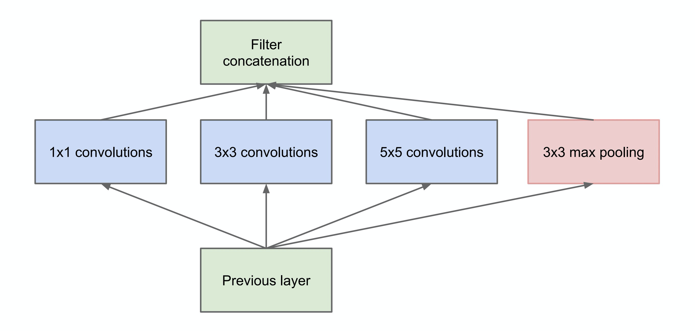
结合图示我们发现，这里是将原来的相同尺寸卷积提取特征的方式拆分为，使用1x1、3x3、5x5以及3x3的max pooling同时进行特征提取，然后再合并到一起。这样就做到了以多尺度的方式提取图片中的特征。
作者为了降低网络的计算成本，将上述的Inception模块做了一步改进，在3x3、5x5之前与pooling之后添加了1x1卷积用来降维，从而获得了Inception模块的最终形态。
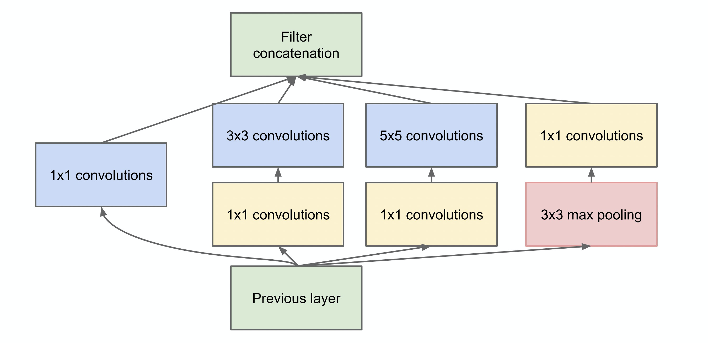
这里有个额外的小知识点，如果是面试，经常会被问到为什么采用1x1的卷积或者1x1卷积的作用。1x1卷积的作用就是用来升维或者降维的。
GooLeNet就是由以上的Inception模块构成的一个22层网络。别看网络层数有22层，但是它参数量却比AlexNet与VGG都要少，这带来的优势就是，搭建起来的模型就很小，占的存储空间也小。具体的网络结构你可以参考它的论文。
ResNet
ResNet中文意思是残差神经网络。在2015年的ImageNet比赛中，模型的分类能力首次超越人眼，1000类图片top-5的错误率降低到3.57%。
在论文中作者给出了18层、34层、50层、101层与152层的ResNet。101层的与152层的残差神经网络效果最好，但是受硬件设备以及推断时间的限制，50层的残差神经网络在实际项目中更为常用。
具体的网络结构你感兴趣的话可以自己看看论文全文，这里我着重带你看看这个网络的主要突破点。
网络退化问题
虽说研究已经证明，随着网络深度的不断增加，网络的整体性能也会提升。如果只是单纯的增加网络，就会引起以下两个问题：第一，模型容易过拟合；第二，产生梯度消失、梯度爆炸的问题。
虽然随着研究的不断发展，以上两个问题都可以被解决掉，但是ResNet网络的作者发现，以上两个问题被规避之后，简单的堆叠卷积层，依然不能获得很好的效果。
为了验证刚才的观点，作者做了这样的一个实验。通过搭建一个普通的20层卷积神经网络与一个56层的卷积神经网络，在CIFAR-10数据集上进行了验证。无论训练集误差还是测试集误差，56层的网络均高于20层的网络。下图来源于论文。
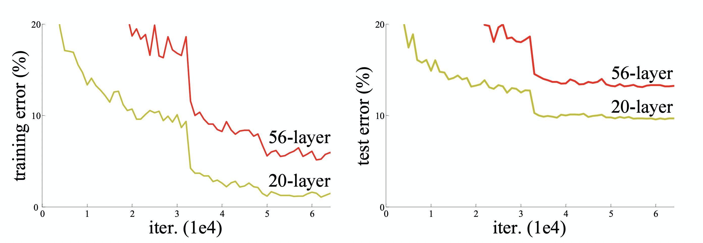
出现这样的情况，作者认为这是网络退化造成的。
网络退化是指当一个网络可以开始收敛时，随着网络层数的增加，网络的精度逐渐达到饱和，并且会迅速降低。这里精度降低的原因并不是过拟合造成的，因为如果是过拟合，上图中56层的在训练集上的精度应该高于20层的精度。
作者认为这一现象并不合理，假设20层是一个最优的网络，通过加深到56层之后，理论上后面的36层是可以通过学习到一个恒等映射的，也就是说理论上不会学习到一个比26层还差的网络。所以，作者猜测网络不能很容易地学习到恒等映射(恒等映射就是f(x)=x)。
残差学习
正如刚才所说，从网络退化问题中可以发现，通过简单堆叠卷积层似乎很难学会到恒等映射。为了改善网络退化问题，论文作者何凯明提出了一种深度残差学习的框架。
因为网络不容易学习到恒等映射，所以就让它强制添加一个恒等映射，如下图所示（下图来源于论文）。
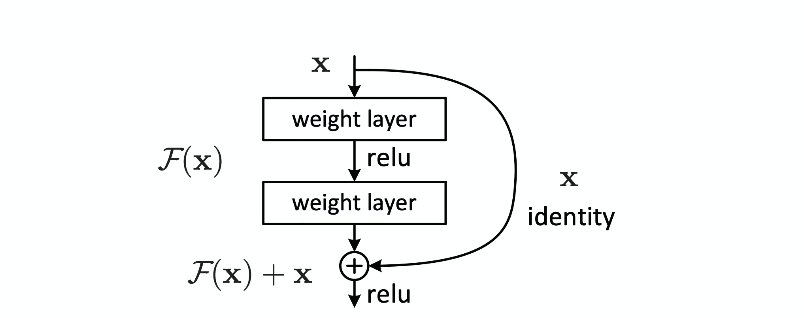
具体实现是通过一种叫做shortcut connection的机制来完成的。在残差神经网络中shortcut connection就是恒等变换，就是上图中带有x identity的那条曲线，包含shortcut connection的几层网络我们称之为残差块。
残差块被定义为如下形式：
\[y = F(x, W\_i) + x\]
F可以是2层的卷积层。也可以是3层的卷积层。最后作者发现，通过残差块，就可以训练出更深、更加优秀的卷积神经网络了。
小结
恭喜你完成了这节课的学习，让我们回顾一下这节课的主要内容。
首先我们从多层感知机说起，带你认识了这个卷积神经网络的前身。之后我们一起推导出了图像分类原理的基础模型。你需要注意的是，整个模型或者网络的重点全都在卷积神经网络那块，所以这也是我们的工作重点。
之后我们结合业界标杆ImageNet的评选情况，一起学习了一些经典的网络结构：VGG、GoogLeNet、ResNet。这里为了让你快速抓住重点，我是从每个网络解决了什么问题，各自有什么突破点展开的。也建议你课余时间多读读相关论文，做更为详细深入的了解。
纵观网络结构的发展，我们不难发现，一直都是长江后浪推前浪，一代更比一代强。掌握了这些网络结构，你就是深度学习未来的弄潮儿。下节课我们再一起实践一个图像分类项目，加深你对图像分类的理解，敬请期待。
思考题
欢迎推荐一下近几年来，你自己觉得比较不错的神经网络模型。
欢迎你在留言区跟我交流互动，也推荐你把这节课分享给更多的同事、朋友。
© 2019 - 2023 Liangliang Lee. Powered by gin and hexo-theme-book.